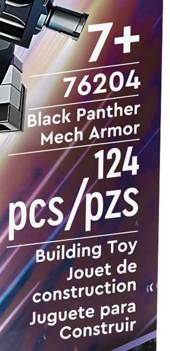

You can use your textbook, any notes that you have, and the available course pages in Canvas for help as you work on these questions.
This activity asks you to consider the characteristics of the audience for the food or beverage label you are analyzing. This series of questions uses questions from the Determining the Important Characteristics of Your Audience PDF. Include the information you gather in this Try-It to your Label Analysis assignment, as appropriate.
Assessment: Canvas automatically marks your work Complete when you submit it. All you have to do is TRY the activity. It’s okay if you make mistakes. Recognize however that if you have not put in an effort to do the work, I may remove the Complete mark.
Question 1
What product are you examining the food or beverage label for?
Question 2
What educational background would someone reading your label need to understand it? How can you tell?

Example, from a non-food label: The back of the LEGO Black Panther Mech Armor package (shown right) includes short details on the toy.
The text (shown in the close-up below)indicates an age range for the toy (7+), the name of the toy (Black Panther Mech Armor), and the number of pieces in the box (124 pcs/pzs). The audience needs only requires only basic reading skills to read the box; however, to understand the full meaning, the audience has to understand how the age level affects the suitability of the product.
Close-up of the text on the back of the box
Question 3
Who is the primary audience for the photos on the food or beverage label? How can you tell?
The primary audience can be the person who will buy the item or the person who will use the item.
Example, from a non-food label: The photos on the LEGO Black Panther Mech Armor package are primarily for the person who will build or collect the toy. The images of the actual toy and suggestion of action from the rays of light and the position of the LEGOs suggest what the reader can do once they build the toy.
Question 4
Who is the primary audience for the text on the food or beverage label? How can you tell?
Again, the primary audience can be the person who will buy the item or the person who will use the item.
Example, from a non-food label: There appear to be two primary audiences. The text on the LEGO Black Panther Mech Armor package seems to address an adult family member or friend of a child because it supplies details on the appropriate age of someone who will play with the toy. A child might also be able to use the information about the appropriate age to argue that they are old enough to have the toy.
Question 5
What assumptions are the label designers making about the primary audience? What attitudes toward the company, the subject or product, and the label itself seem likely?
Check the details on the top of the second page of Determining the Important Characteristics of Your Audience PDF for help with this question.
Question 6
How will the audience of your food or beverage label use the label? How can you tell?
Think about how the use of the label changes depending upon what the audience is doing. What information matters if the audience is deciding whether to buy the product? What information matters if the person is considering preparing the product?
Question 7
Based on the information you gathered in the previous questions, who are the particular readers of your label? Describe the specific details on the label that indicate who the readers are.
You can repeat or rephrase your answers from previous questions as you work on this question.
Question 8
I have neither given nor received unauthorized assistance on this assignment.
- True
- False